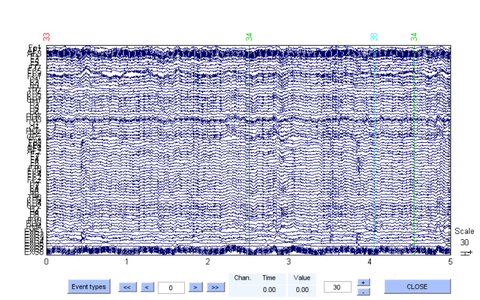

CompareLabels
Compares two sets of labeled data
Contents
Syntax
results = compareLabels(EEG, labeledSet1, labeledSet2, timingError, srate) [results errorInfo] = compareLabels(EEG, labeledSet1, labeledSet2, timingError, srate) [results errorInfo timeInfo] = compareLabels(EEG, labeledSet1, labeledSet2, timingError, srate)
Description
results = compareLabeledData(EEG, labeledSet1, labeledSet2, timingError, srate) returns an event structure containing the decision types, together with a start and end time, in seconds. The decision types can take one of five values:
| Type name | Description |
| Agreement | The labels of the two label sets are the same and in type agreement |
| TypeError | The labels from the two label sets are the same in time but not in type agreement |
| FalsePositive | A label in label set 2 was not found in label set 1 at that time |
| FalseNegative | A label in label set 1 was not found in label set 2 at that time |
| NullAgreement | Neither label set was labeled that time |
[results, errorInfo] = compareLabeledData(EEG, labeledSet1, labeledSet2, timingError, srate) returns an additional structure errorInfo which contains information about decisions with typeError, falsePositive and falseNegative.
[results, errorInfo, timeInfo] = compareLabeledData(EEG, labeledSet1, labeledSet2, timingError, srate) returns a summary of the time, in seconds, in each of the five states described above.
The input arguments are:
| Argument | Description |
| inputData | Either a 2-D matrix input or an EEGLAB EEG structure containing 2-D data. Dimensions are (channels x frames) |
| labeledSet1 | The output of either markEvents or plotLabeledData (treated as ground truth) |
| labeledSet2 | The output of either markEvents or plotLabeledData |
| timingError | Allowable timing error to still consider two regions as the same (in seconds) (See examples below for further details) |
| srate | Sampling rate of data in Hz |
The outputs are
| Argument | Description |
| results | Cell array with three columns: [agreement type], startTime], [endTime] |
| errorInfo | For events with 'TypeError', 'FalsePositive' or 'FalseNegative', will give the following output: [type1], [type2], [startTime], [endTime] (see examples below) |
| timeInfo | A structure with output fields .agreement, .typeError, .falsePositive, .falseNegative, .totalTime. Each field represents the total time, in seconds, of each state. |
Example
Compare the labelings using two different channel sets to train an artifact discrimination model:
training = pop_loadset('data/training.set'); load('data/labels.mat'); % build model using all 64 EEG Channels model1 = getModel(training, labels, 1:64); % now build model using only 32 EEG channels model2 = getModel(training, labels, 1:32); % now load testing dataset testing = pop_loadset('data/testing.set'); % Use sliding window of .125s for data sampled at 256hz results1 = labelData(testing, model1, 256, .125); results2 = labelData(testing, model2, 256, .125); % apply a certainty policy to remove false positives results1 = thresholdPolicy(results1, 'None', .5); results2 = thresholdPolicy(results2, 'None', .5); % plot the data and get an event list ignoring the category 'None' classes = {'Eye Blink', 'Eye Left Movement', 'Eye Up Movement', 'Eyebrow Movement', 'Jaw Clench', 'Jaw Movement'}; labelSet1 = plotLabeledData(testing, model1, results1, 'srate', 256, 'includeClasses', classes); labelSet2 = plotLabeledData(testing, model2, results2, 'srate', 256, 'includeClasses', classes); % compare the labelings, allowing for up to .100s timing error, for % data sampled at 256hz. [results, errorInfo, timeInfo] = compareLabels(testing, labelSet1,... labelSet2, .1, 256)
pop_loadset(): loading file data\training.set ...
pop_loadset(): loading file data\testing.set ...
-----------------------------------------------------
Total Time in Agreement = 460.527 seconds
Total Time in TypeError = 2.219 seconds
Total Time in FalsePositive = 16.016 seconds
Total Time in FalseNegative = 0.773 seconds
Total Time of Data = 479.996 seconds
-----------------------------------------------------
results =
'NullAgreement' [ 0] [ 12.3281]
'Agreement' [ 12.3320] [ 13.1484]
'NullAgreement' [ 13.1523] [ 16.3008]
'FalseNegative' [ 16.3047] [ 16.3281]
'Agreement' [ 16.3320] [ 16.8984]
'FalseNegative' [ 16.9023] [ 16.9258]
'NullAgreement' [ 16.9297] [ 19.7031]
'Agreement' [ 19.7070] [ 20.2734]
'TypeError' [ 20.2773] [ 20.3008]
'NullAgreement' [ 20.3047] [ 25.7031]
'Agreement' [ 25.7070] [ 26.3984]
'TypeError' [ 26.4023] [ 26.4258]
'NullAgreement' [ 26.4297] [ 37.8008]
'FalsePositive' [ 37.8047] [ 37.9258]
'NullAgreement' [ 37.9297] [ 40.8281]
'Agreement' [ 40.8320] [ 41.6484]
'NullAgreement' [ 41.6523] [ 70.3008]
'FalsePositive' [ 70.3047] [ 70.4258]
'NullAgreement' [ 70.4297] [ 73.6758]
'FalsePositive' [ 73.6797] [ 73.8008]
'NullAgreement' [ 73.8047] [ 83.5508]
'FalsePositive' [ 83.5547] [ 83.8008]
'NullAgreement' [ 83.8047] [ 93.1758]
'FalsePositive' [ 93.1797] [ 93.5508]
'NullAgreement' [ 93.5547] [ 93.8008]
'TypeError' [ 93.8047] [ 94.0508]
'NullAgreement' [ 94.0547] [113.8008]
'FalsePositive' [113.8047] [113.9258]
'NullAgreement' [113.9297] [118.9531]
'Agreement' [118.9570] [119.6484]
'NullAgreement' [119.6523] [124.1758]
'FalseNegative' [124.1797] [124.4258]
'NullAgreement' [124.4297] [173.3281]
'Agreement' [173.3320] [173.7734]
'TypeError' [173.7773] [174.0508]
'NullAgreement' [174.0547] [175.1758]
'TypeError' [175.1797] [175.2031]
'Agreement' [175.2070] [175.6484]
'TypeError' [175.6523] [175.9258]
'FalsePositive' [175.9297] [177.3008]
'NullAgreement' [177.3047] [177.8008]
'FalsePositive' [177.8047] [178.5508]
'TypeError' [178.5547] [178.6758]
'FalseNegative' [178.6797] [178.8008]
'NullAgreement' [178.8047] [178.9258]
'FalseNegative' [178.9297] [178.9531]
'Agreement' [178.9570] [179.2734]
'TypeError' [179.2773] [179.4531]
'Agreement' [179.4570] [182.0234]
'TypeError' [182.0273] [182.0508]
'FalseNegative' [182.0547] [182.1758]
'NullAgreement' [182.1797] [184.4531]
'Agreement' [184.4570] [185.1484]
'TypeError' [185.1523] [185.1758]
'NullAgreement' [185.1797] [199.4258]
'FalsePositive' [199.4297] [199.6758]
'NullAgreement' [199.6797] [206.6758]
'FalsePositive' [206.6797] [207.4258]
'NullAgreement' [207.4297] [217.8008]
'FalsePositive' [217.8047] [218.3008]
'NullAgreement' [218.3047] [218.5508]
'FalsePositive' [218.5547] [218.9258]
'NullAgreement' [218.9297] [235.8008]
'FalsePositive' [235.8047] [236.4258]
'NullAgreement' [236.4297] [242.4258]
'FalsePositive' [242.4297] [243.0508]
'NullAgreement' [243.0547] [247.6758]
'FalsePositive' [247.6797] [248.6758]
'NullAgreement' [248.6797] [258.9258]
'FalsePositive' [258.9297] [259.5508]
'NullAgreement' [259.5547] [263.6758]
'FalsePositive' [263.6797] [264.0508]
'NullAgreement' [264.0547] [265.1758]
'FalsePositive' [265.1797] [265.9258]
'NullAgreement' [265.9297] [274.0781]
'Agreement' [274.0820] [274.7734]
'FalseNegative' [274.7773] [274.8008]
'NullAgreement' [274.8047] [285.0781]
'Agreement' [285.0820] [285.7734]
'NullAgreement' [285.7773] [292.5508]
'FalseNegative' [292.5547] [292.6758]
'NullAgreement' [292.6797] [296.9258]
'TypeError' [296.9297] [296.9531]
'Agreement' [296.9570] [297.5234]
'NullAgreement' [297.5273] [349.9531]
'Agreement' [349.9570] [350.6484]
'FalseNegative' [350.6523] [350.6758]
'NullAgreement' [350.6797] [355.5508]
'FalseNegative' [355.5547] [355.5781]
'Agreement' [355.5820] [356.1484]
'TypeError' [356.1523] [356.1758]
'FalsePositive' [356.1797] [357.0508]
'TypeError' [357.0547] [357.1758]
'FalsePositive' [357.1797] [357.3008]
'TypeError' [357.3047] [357.4258]
'FalsePositive' [357.4297] [361.0508]
'NullAgreement' [361.0547] [361.5508]
'FalsePositive' [361.5547] [361.9258]
'TypeError' [361.9297] [362.3281]
'Agreement' [362.3320] [363.1484]
'TypeError' [363.1523] [363.2031]
'Agreement' [363.2070] [364.0234]
'TypeError' [364.0273] [364.3008]
'NullAgreement' [364.3047] [365.8008]
'FalsePositive' [365.8047] [366.3008]
'NullAgreement' [366.3047] [382.3008]
'FalsePositive' [382.3047] [382.4258]
'NullAgreement' [382.4297] [446.7031]
'Agreement' [446.7070] [447.5234]
'FalseNegative' [447.5273] [447.5508]
'NullAgreement' [447.5547] [458.8008]
'FalsePositive' [458.8047] [459.3008]
'NullAgreement' [459.3047] [459.4258]
'FalsePositive' [459.4297] [459.8008]
'NullAgreement' [459.8047] [462.8008]
'FalsePositive' [462.8047] [462.9258]
'NullAgreement' [462.9297] [472.3008]
'FalsePositive' [472.3047] [472.6758]
'NullAgreement' [472.6797] [479.9961]
errorInfo =
'Eye Left Movement' 'Null' [ 16.3047] [ 16.3281]
'Eye Left Movement' 'Null' [ 16.9023] [ 16.9258]
'Eye Blink' 'Eye Up Movement' [ 20.2773] [ 20.3008]
'Eye Blink' 'Eye Up Movement' [ 26.4023] [ 26.4258]
'Null' 'Jaw Clench' [ 37.8047] [ 37.9258]
'Null' 'Jaw Clench' [ 70.3047] [ 70.4258]
'Null' 'Jaw Clench' [ 73.6797] [ 73.8008]
'Null' 'Jaw Clench' [ 83.5547] [ 83.8008]
'Null' 'Jaw Clench' [ 93.1797] [ 93.5508]
'Eye Blink' 'Jaw Clench' [ 93.8047] [ 94.0508]
'Null' 'Jaw Clench' [113.8047] [113.9258]
'Eye Blink' 'Null' [124.1797] [124.4258]
'Eye Blink' 'Jaw Clench' [173.7773] [174.0508]
'Eye Blink' 'Eye Up Movement' [175.1797] [175.2031]
'Eye Blink' 'Jaw Clench' [175.6523] [175.9258]
'Null' 'Jaw Clench' [175.9297] [177.3008]
'Null' 'Jaw Clench' [177.8047] [178.5508]
'Eye Up Movement' 'Jaw Clench' [178.5547] [178.6758]
'Eye Up Movement' 'Null' [178.6797] [178.8008]
'Eye Left Movement' 'Null' [178.9297] [178.9531]
'Eye Blink' 'Jaw Clench' [179.2773] [179.4531]
'Jaw Movement' 'Jaw Clench' [182.0273] [182.0508]
'Eye Left Movement' 'Null' [182.0547] [182.1758]
'Eye Blink' 'Eye Up Movement' [185.1523] [185.1758]
'Null' 'Jaw Clench' [199.4297] [199.6758]
'Null' 'Jaw Clench' [206.6797] [207.4258]
'Null' 'Jaw Clench' [217.8047] [218.3008]
'Null' 'Jaw Clench' [218.5547] [218.9258]
'Null' 'Jaw Clench' [235.8047] [236.4258]
'Null' 'Jaw Clench' [242.4297] [243.0508]
'Null' 'Jaw Clench' [247.6797] [248.6758]
'Null' 'Jaw Clench' [258.9297] [259.5508]
'Null' 'Jaw Clench' [263.6797] [264.0508]
'Null' 'Jaw Clench' [265.1797] [265.9258]
'Eye Blink' 'Null' [274.7773] [274.8008]
'Eye Up Movement' 'Null' [292.5547] [292.6758]
'Eye Blink' 'Eye Up Movement' [296.9297] [296.9531]
'Eye Blink' 'Null' [350.6523] [350.6758]
'Eye Up Movement' 'Null' [355.5547] [355.5781]
'Eye Blink' 'Jaw Clench' [356.1523] [356.1758]
'Null' 'Jaw Clench' [356.1797] [357.0508]
'Eye Blink' 'Jaw Clench' [357.0547] [357.1758]
'Null' 'Jaw Clench' [357.1797] [357.3008]
'Eye Blink' 'Jaw Clench' [357.3047] [357.4258]
'Null' 'Jaw Clench' [357.4297] [361.0508]
'Null' 'Jaw Clench' [361.5547] [361.9258]
'Eye Blink' 'Jaw Clench' [361.9297] [362.3281]
'Eye Blink' 'Eye Left Movement' [363.1523] [363.2031]
'Eye Left Movement' 'Eye Up Movement' [363.2070] [364.0234]
'Eye Left Movement' 'Eyebrow Movement' [364.0273] [364.3008]
'Null' 'Jaw Clench' [365.8047] [366.3008]
'Null' 'Jaw Clench' [382.3047] [382.4258]
'Eye Blink' 'Null' [447.5273] [447.5508]
'Null' 'Jaw Clench' [458.8047] [459.3008]
'Null' 'Jaw Clench' [459.4297] [459.8008]
'Null' 'Jaw Clench' [462.8047] [462.9258]
'Null' 'Jaw Clench' [472.3047] [472.6758]
timeInfo =
agreement: 460.5273
typeError: 2.2188
falsePositive: 16.0156
falseNegative: 0.7734
totalTime: 479.9961
 Copyright 2011-2013 Vernon Lawhern and Kay A. Robbins, University of Texas at San Antonio